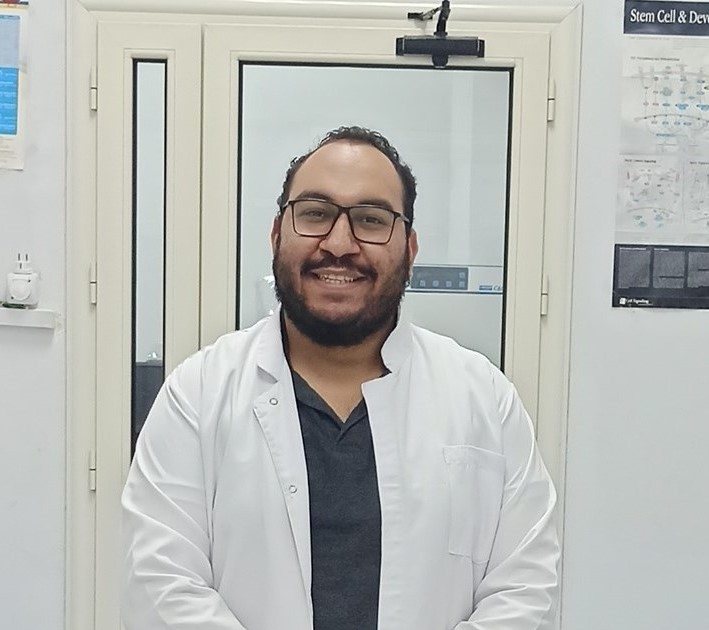
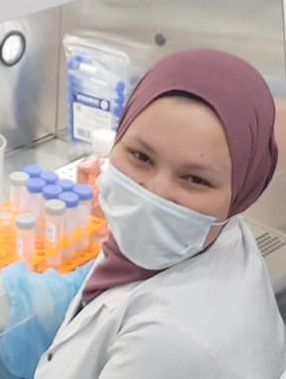

Prof. Dr. Sherif Abdelaziz Ibrahim
Head & Founder
Hover for details
Prof. Dr. Sherif Abdelaziz Ibrahim
Head & Founder
Hover for details
Prof. Dr. Sherif A. Ibrahim
Professor of Cell and Cancer Biology
Ph.D Münster, Germany (2011)
Research Focus:
Defining molecular signatures in inflammatory breast cancer (IBC) and its microenvironment, focusing on Syndecan-1, cancer stem cells, and exosomes.
We explore ideas that matter.
Cellular and Molecular Biosciences Research Laboratory at Cairo University. Our research spans a broad range of interconnected areas, including:
Cancer Research — focusing on biomarker discovery, tumor progression, and therapeutic targeting.
Cell Biology — elucidating signaling pathways, extracellular matrix interactions, and cell–cell communication.
Human Biology — linking laboratory discoveries to clinical translation and patient outcomes.
Latest Highlights
- New paper accepted in Scientific Reports on SDC2 and FN as biomarkers for lymph node metastasis in breast cancer.
- Dr. Hassan received a grant for the STDF project on extracellular vesicle-derived proteoglycans.
- CMBRL presented new findings on microRNA signatures at the latest International Congress for Molecular Biology.
About the Lab
The Cellular and Molecular Biosciences Research Laboratory (CMBRL) at Cairo University—founded and led by Prof. Dr. Sherif A. Ibrahim, Professor of Zoology (Cancer Cell Biology) and Egyptian leader of the GLYCANC Project—is dedicated to advancing our understanding of cancer biology at the molecular and cellular levels.
Prof. Ibrahim has secured competitive funding from EU Horizon 2020 to investigate the role of the cell-surface heparan sulfate proteoglycan Syndecan-1 (Sdc-1) and regulatory microRNAs in breast cancer progression. He has also led projects funded by DAAD, STDF, and ASRT. His pioneering work aims to define distinct molecular signatures and uncover novel mechanisms driving inflammatory breast cancer (IBC) and its tumor microenvironment, with emphasis on proteoglycans, cancer stem cells, and extracellular vesicles.
Founded: 2019 • Department of Zoology, Faculty of Science, Cairo University — Giza, Egypt
Opportunities
Open Positions: Not applicable at this time. Follow us for future opportunities.
We welcome collaborative projects and visiting researchers. Please contact Prof. Ibrahim directly with proposals.
Mission
To elucidate the molecular circuitry of cancer—with emphasis on breast cancer and related conditions such as endometriosis—by discovering robust early-detection biomarkers and actionable therapeutic targets, and by decoding the signaling networks and microenvironmental cues that drive initiation, progression, and treatment resistance. We conduct rigorously reproducible research using state-of-the-art cellular, molecular, and multi-omics technologies, translating mechanistic insight into clinically relevant strategies for patients in Egypt and worldwide.
Vision
A future where breast cancer is detected earlier, treated more precisely, and prevented more effectively through validated biomarkers, targeted therapeutics, and deep mechanistic understanding—bridging bench discoveries to bedside impact for communities in Egypt and beyond.
Research Team
Professor of Cancer Cell Biology • Head & Founder
Associate Professor • Co-PI

PhD Student • Senior Researcher

PhD Student • Senior Researcher
MSc Student • Junior Researcher
Research Areas
Biomarker Discovery & Therapeutic Targeting
We focus on identifying molecular biomarkers for early detection and uncovering novel therapeutic targets that drive tumor progression, with emphasis on inflammatory breast cancer.
Signaling & Microenvironment
Our work explores cellular signaling pathways, extracellular matrix interactions, and mechanisms of cell–cell communication shaping cancer progression and metastasis.
Clinical Translation
We link laboratory discoveries to clinical outcomes, integrating molecular and proteomic insights to improve patient diagnosis, treatment, and prognosis.
Projects & International Collaborations
Publications (41 Total)
News
No recent news or announcements at this time.
Opportunities
Prospective Students
We are always looking for passionate and motivated students to join our team. If you are interested in our research, please get in touch.
Email the LabCollaborators & Partners
Our work is enhanced by collaboration. We welcome partnerships with academic labs and industry leaders to tackle complex challenges together.
Discuss CollaborationContact
Email: cmb.research.lab@gmail.com
Address: Department of Zoology, Faculty of Science, Cairo University, Giza, Egypt
Social: LinkedIn • Facebook • ResearchGate